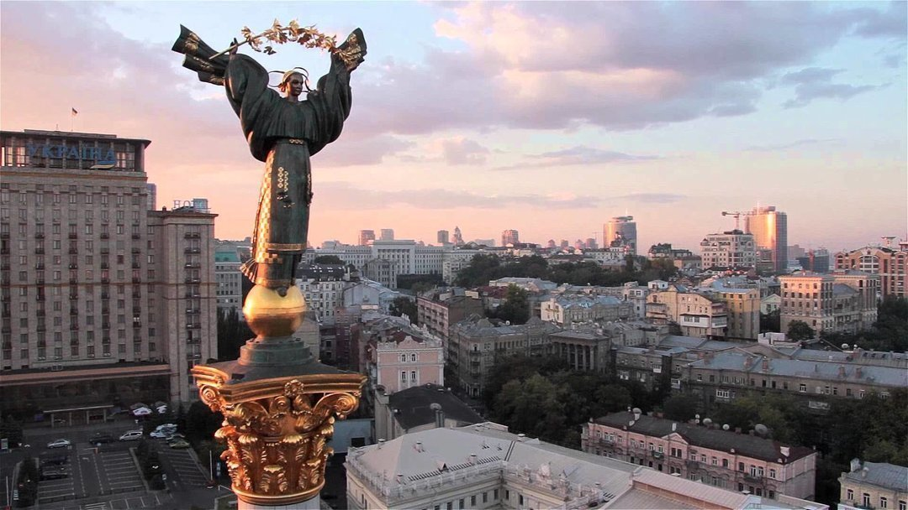
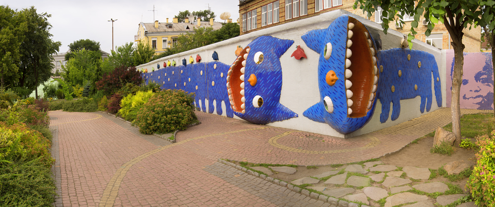
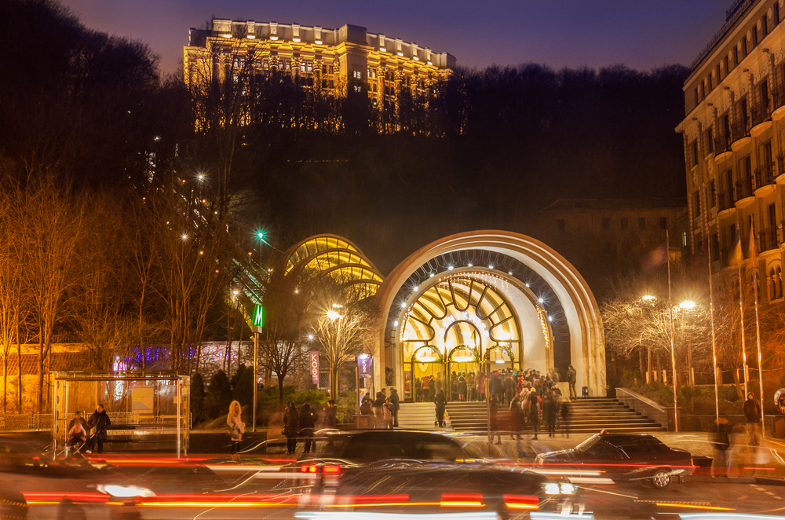
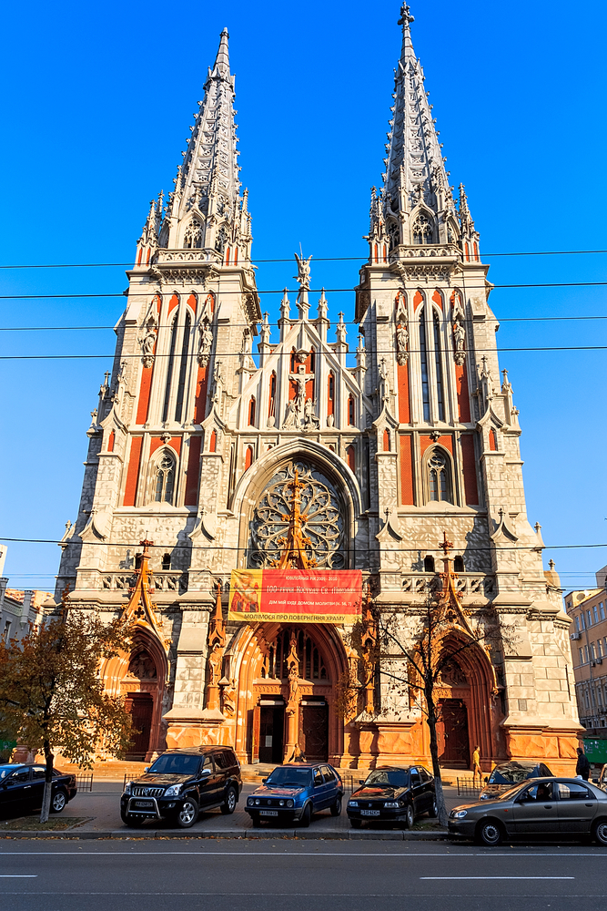
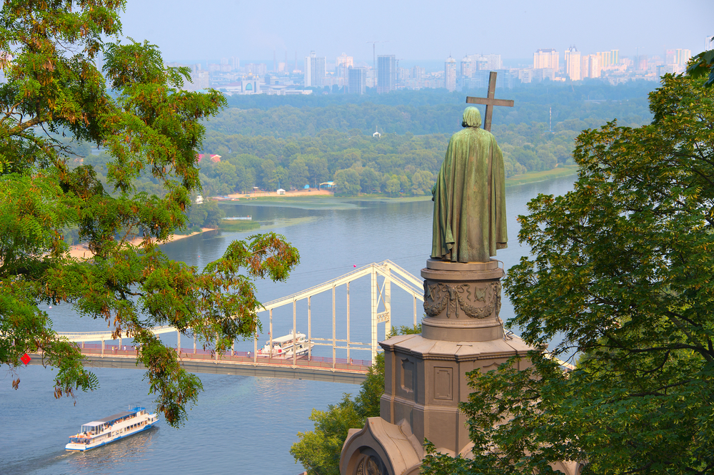
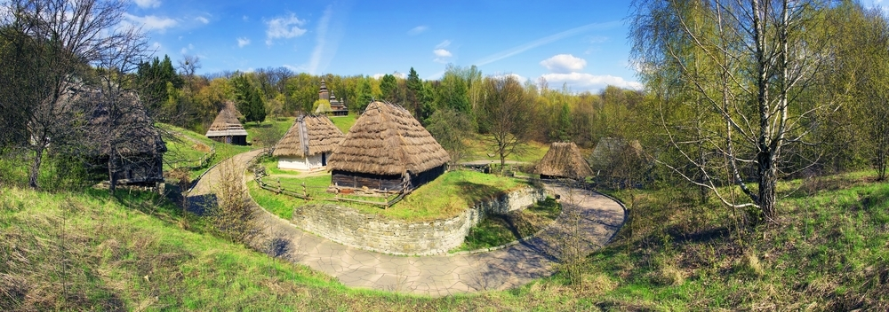

Гостинний, світлий, затишний, древній, з позитивною енергетикою і безліччю дивовижних місць, — все це можна сказати про головне місто нашої країни. Давно плануєте поїздку до Києва? Тоді у цій статті ви знайдете актуальну та важливу для вас інформацію. Київ запрошує вас відвідати його найцікавіші пам'ятки, які не можна пропустити під час подорожі столицею.
Красива пам'ятка в Києві: Пейзажна алея
Зовсім неподалік від Андріївської церкви починається Пейзажна алея – один з казкових скверів столиці, де зібрані скульптури найдивовижніших, прикольних, а іноді і дивакуватих істот, виготовлених вмілими і не дуже руками місцевих художників. Тут і Кішка-сороконіжка, і Маленький Принц, і Зайці, і Зебри і ще багато всякого добра, що полюбилося киянам і гостям столиці. Гарне місце для селфі і огляду околиць Києва.

Транспортна пам'ятка столиці: київський фунікулер
Електрична канатна залізниця або ж фунікулер, протяжністю понад 200 метрів, з'єднує дві частини міста: Поштову площу на Подолі з верхньої тераси Володимирської гірки в Верхньому місті. Всього за 3 хвилини ви переміститеся з однієї частини міста в іншу, при цьому відкривається цікавий вид з вікна фунікулера. Загальний перепад висот становить 75 метрів, а вагони рухаються під ухилом 20 градусів.

Культурна пам'ятка Києва: Миколаївський костел
Красива велична старовинна будівля римо-католицького костелу Святого Миколая розташована на вулиці Великій Васильківській. Одне з творінь відомого польського архітектора Владислава Городецького. З 1980 року костел використовується в якості Будинку органної та камерної музики, так що любителі класики можуть отримати подвійне задоволення – і від споглядання архітектури, і від прослуховування справжнього живого органу.

Історична пам'ятка Києва: пам'ятник Володимиру Великому
Високо над Києвом на схилі Володимирської гірки піднімається величезна статуя князя Володимира Хрестителя роботи Петра Клодта, Василя Демут-Малиновського та Костянтина Тона. Це один з головних символів Києва, завдяки якому парк отримали свою назву. Саме до пам'ятника Володимиру ведуть всі сходи і алеї Володимирської гірки. А з панорамного майданчика відкривається вражаючий вид на весь лівобережний Київ..

Пам'ятка навколо Києва: музей під відкритим небом Пирогово
Затишне, колоритне автентичне містечко, що розкинулося на території понад 150 гектарів на південному заході від Києва. Пирогово – це музей української народної архітектури та побуту під відкритим небом, а також найбільший заповідний комплекс в Східній Європі. Тут особлива атмосфера, безліч старих будиночків, млини, дерев'яні церкви, кузня та інші зразки дерев'яного зодчества та побуту XVI-IXX століть. Експонати для музею звозилися з усієї території країни. Сюди можна втекти від шуму і суєти столиці, побродити по численних місцях, які представляють собою збори всього різноманітного українського колориту в єдиному місці.
